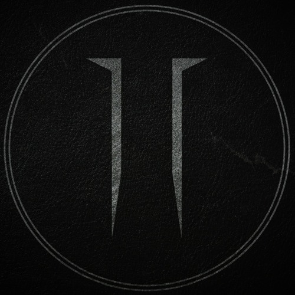

Press Kit
Download high-resolution promotional photos suitable for press use, posters, and show announcements.
View & Download Photos
Alternative Metal | Glasgow, Scotland
A first statement from Half Awake Eyes: heavy, atmospheric, and emotionally sharp, with enough space and tension to stand out from more one-note modern metal releases.
Everything a promoter, venue, festival booker, journalist, or collaborator needs in one place.

Half Awake Eyes are a four-piece alternative metal band from Glasgow, formed in late 2024. Blending crushing riffs with intricate rhythm work and dynamic, emotive vocals, the band create music that balances atmosphere and intensity, prioritising feel, space, and storytelling over constant heaviness.
Since forming, the band have built strong early momentum through a DIY approach and consistent live activity. Their track "Dispossession" received airplay on BBC Introducing Scotland, marking an early milestone. The band recently supported The Cost at G2, along with planned showcase appearances such as Metal 2 the Masses.
Half Awake Eyes released their debut EP on the 11th of February 2026.
Recent live footage showing atmosphere, weight, and how the material lands in the room.
Recent shows and upcoming appearances for promoters tracking activity and draw.
Quick access to the materials most often requested by promoters, venues, and press, along with direct contact points for booking and social discovery.
Download high-resolution promotional photos suitable for press use, posters, and show announcements.
View & Download PhotosFor promoters and venues, refer to the stage plot and input list before confirming show logistics.
Download Tech Requirements